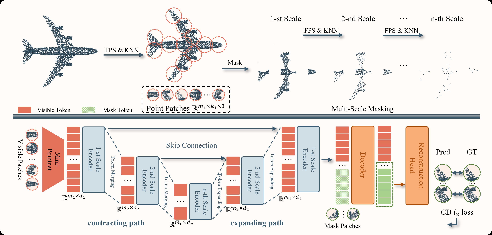
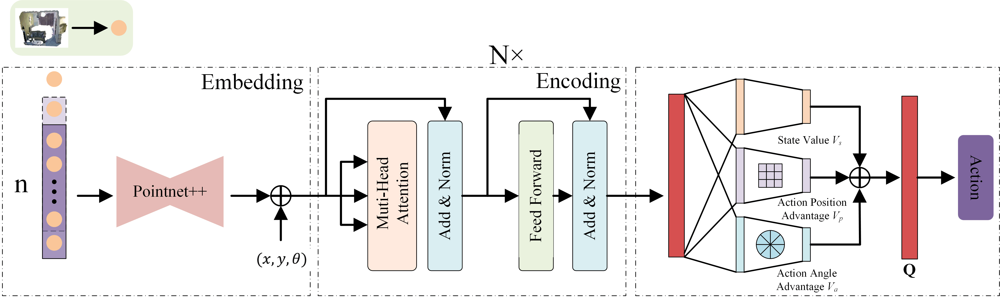

I hold a Ph.D. from South China University of Technology (advised by Prof. Ping Zhang), with research spanning embodied intelligence, robotic manipulation, active perception, reinforcement learning, and 3D point cloud understanding. I have published 7 first-author papers at IJCAI, AAAI, TNNLS, ICASSP, and ICME. I now work at sudo, focusing on robot foundation-model development.
South China University of Technology, School of Computer Science and Engineering
South China University of Technology, School of Mechanical and Automotive Engineering
Undergraduate studies in mechanical engineering.
sudo, Shanghai
Foundation model algorithm development.
Guangdong HYNN Technology Co., Ltd.
Mechanical design and engineering.




FAEMTrack: Feature-Augmented Embedding and Cross-Drone Fusion for Single Object Tracking
IEEE Internet of Things Journal, 2025
Multi-objective Neural Architecture Search Combining Binary Artificial Bee Colony Algorithm for Dynamic Hand Gesture Recognition
Expert Systems with Applications, 2025
Reinforcement Learning-Driven Dual Neighborhood Structure Artificial Bee Colony Algorithm for Continuous Optimization Problem
Applied Soft Computing, 2024